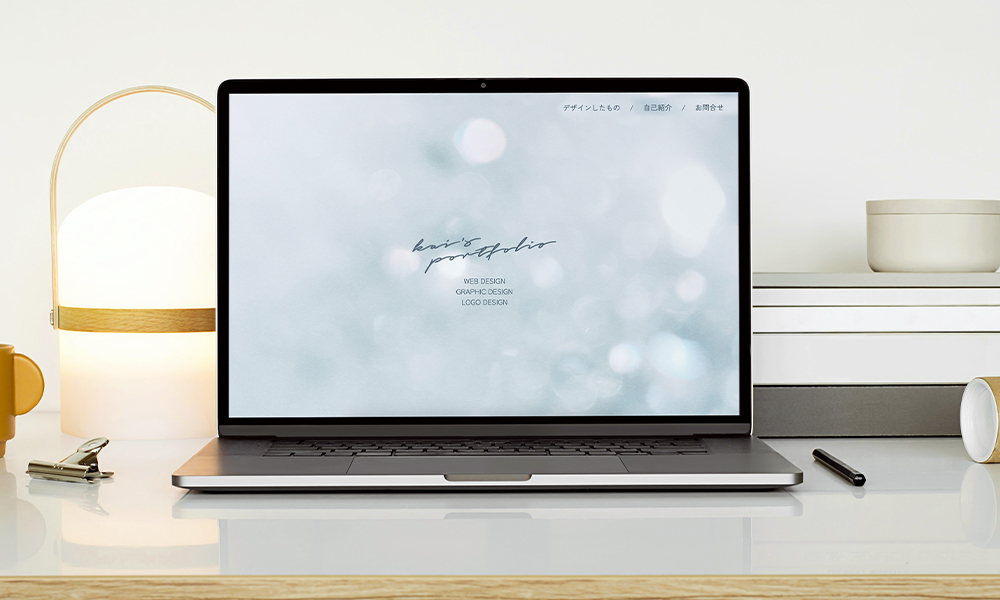
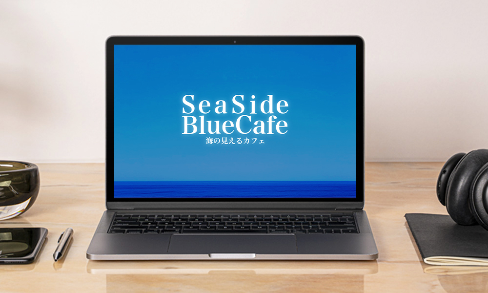
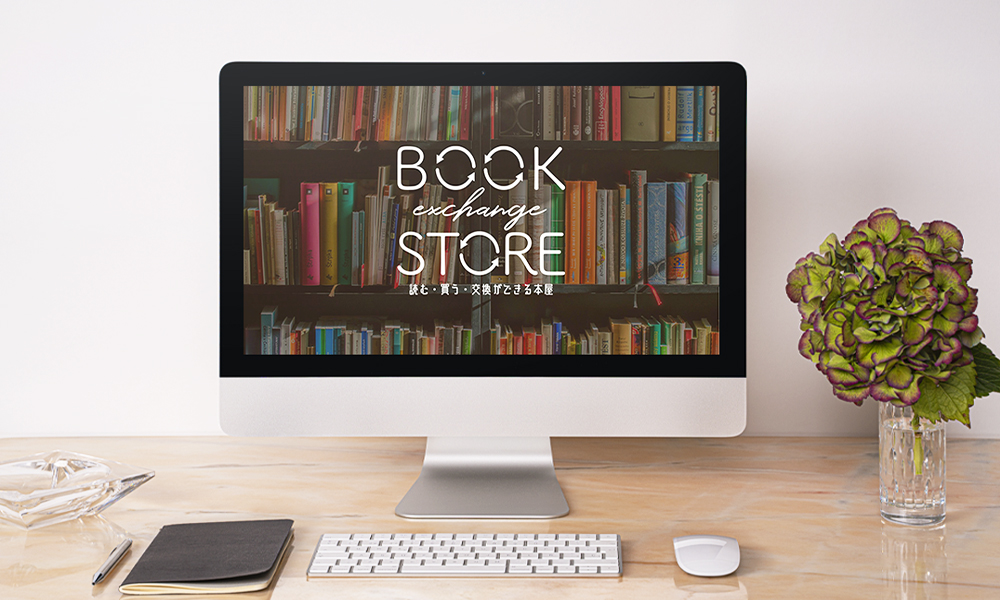
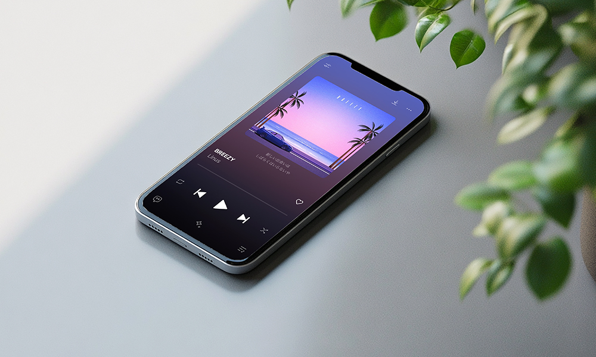
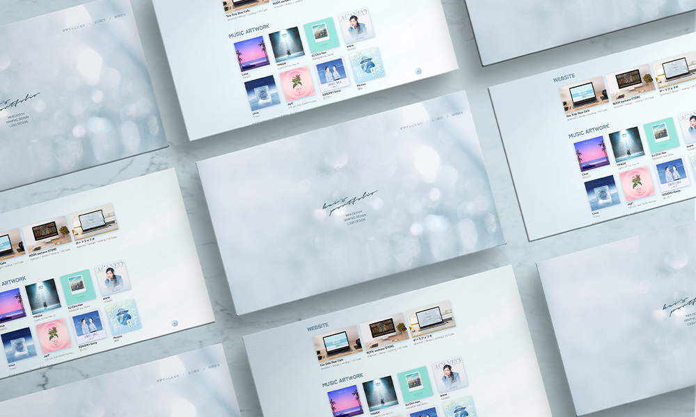

#website
ポートフォリオ
転職活動のためのポートフォリオサイトを制作しました。情報をわかりやすく整理し、モックアップ等を活用して、 作品としても魅力的に見ていただけるようなデザインに。会ってみたいと思っていただけるようなサイトを目指しました。
サイトを見る



| ターゲット | 採用担当の方々 |
| 目的 | 転職活動において書類選考通過を目指す。採用担当者の方に、自身の経歴やスキルを一目で理解してもらえるよう整理し、 書類で伝わりにくいパーソナル部分についてもより理解を促し、働くイメージを持っていただく。 |
| 情報設計 | 採用担当者の方が最も関心を持つでると思われる制作物をメインビジュアル直後に配置しました。 特に見ていただきたい3つの作品をトップページに並べ、その他の作品は下層ページにまとめました。 また、さらに興味を持っていただいた方には、プロフィールページをご覧いただくことで、 私のプロフィール、スキル、強みをより詳しく知ってもらい、理解を深めていただけるようにしました。 |
| デザインプロセス | ごちゃっとせずシンプルなスタイルを基調とし、見やすさを第一優先になるよう工夫しました。 また、文章を端的にまとめ、写真やモックアップを魅力的に配置することで、テキストの多さを軽減しています。 シャドウやグラデーションなどの装飾にもこだわり、単なる情報整理や見やすさだけでなく、 ポートフォリオ自体が印象に残ることを目指しています。 |
| 制作期間 |
企画、情報設計、WF / 1日 |
| 使用ツール | VS Code / Illustrator / Photoshop |

お問合せ
デザインのご相談などお気軽にご連絡ください。
メールはこちらへ